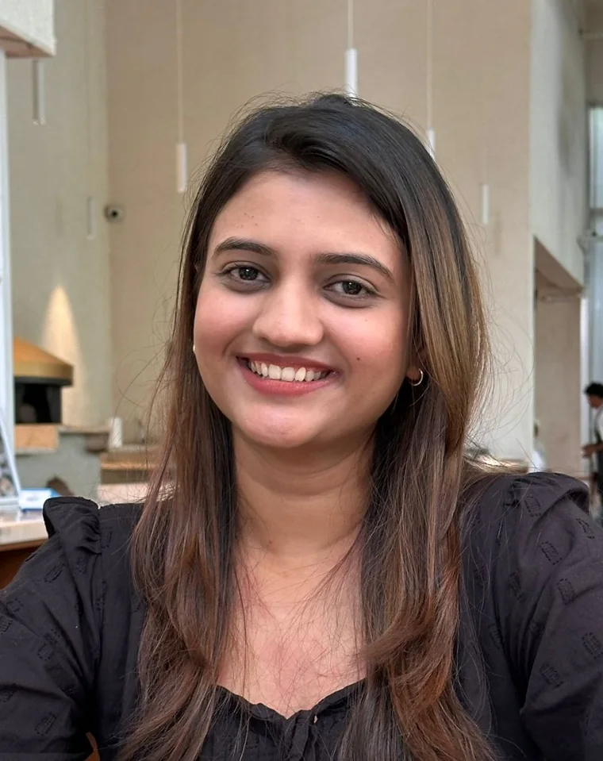

Surat, Gujarat · Open to UX/UI and interaction design roles
I notice the
little things.
They often lead to bigger questions.
I’m Kinjal, an interaction and UX designer who likes understanding the people and stories behind everyday experiences.
I’m studying for an M.Des in Interaction Design at Dhirubhai Ambani University, exploring how research, design and technology can come together to make those interactions more thoughtful.

Inside this case study
“Goes ahead at 3”: one rule, followed through every screen.
Enter to follow →

Inside this case study
One turned board, one arrow, and a side path to the aviary with no board at all.
Enter to follow →
Inside this case study
Each river drawn to scale, from the sea upstream.
Enter to follow →
Selected work · three routes
Each route is shown the way its evidence lives: on a screen, on the ground, in the data.
Route 01
Little Bloom
A parenting app for first-time parents of children under five. I designed its Community feature, where parents nearby plan playdates that only go ahead once enough of them join.
- What I found
- 6 of 18 parents weren’t confident choosing age-appropriate activities. In interviews, parents felt better doing activities with other parents.
- What it meant
- Activities are where parents feel least sure, and also where they enjoy company.
- What I decided
- Community is built around meeting up to do something together: a playdate, a story circle, an art morning.
Goes ahead at 3
The minimum shows on every card, in the join sheet and in both outcomes.


Route 02
Indroda Nature Park
Navigation failure is a system issue, not a user issue.
A field study of how first-time visitors find their way around a large nature park in Gandhinagar, and where its signage lets them down.
Research and framing. Five design directions proposed; none designed in full or tested yet.
Follow this route →Route 03
Rivers of Gujarat
An interactive story about Gujarat’s rivers: where they rise, how far they run, the dams built on them and how polluted they are.
185
rivers in Gujarat
802
dams, one square each
47
named rivers, sorted 3 ways
How I decide
Three moments where the evidence moved the design.
Not a process diagram. These happened, and each one changed what I made.
Little Bloom
Survey · April 2026
I wrote the problem around nuclear families. Then 11 of 18 survey respondents turned out to live in joint families, and still felt unsure.
I rewrote the problem statement. Having family nearby doesn’t settle the doubts, so the app couldn’t assume it would.
Indroda Nature Park
Field visits · January 2026
Visitors asked someone to confirm the way, even after reading a board.
I read it as the board failing, not the visitor, and proposed reassurance markers along the path.
Rivers of Gujarat
Early layout → live site
My first layout used wave bands, a photo carousel and a pie chart around the data.
The live site draws each river to scale from the sea upstream, and gives every dam its own square, so the shapes carry the data.

About
Curious about people.
I’m Kinjal, an Interaction & UX Designer who is curious about people and the world around me.
I often find myself noticing the little things—how people behave, what makes them feel comfortable, and the small frustrations that are easy to overlook. I’m interested in understanding the stories behind these everyday experiences and seeing things from perspectives different from my own.
I don’t think there’s one way to approach a problem, or that I’ve figured everything out. I enjoy asking questions, exploring possibilities, and learning along the way. For me, design is a way to turn that curiosity into experiences that feel a little more thoughtful, human, and meaningful.
- Based in
- Surat, Gujarat
- Studying
- M.Des IUxD, DAU (2025–)
- Works in
- Research · UX · UI · Figma